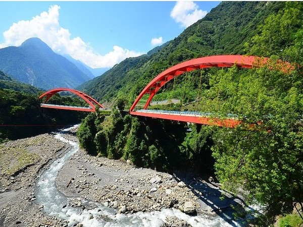
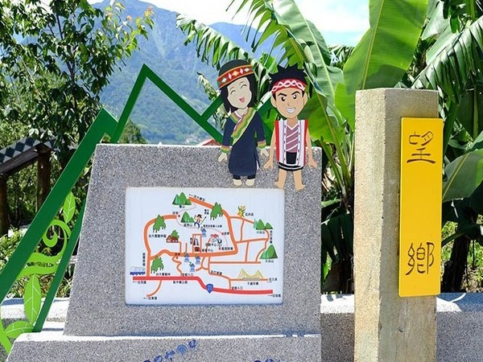

位於玉山群峰下美麗的東埔溫泉區，為2006年新完工的建築。
質樸溫馨的小木屋，以及隱密舒適的私人泡湯空間結合而成專屬於您的露天的湯屋，早晨的陽光透過窗喚醒一夜安眠的休憩者，新鮮的空氣與美麗的視野陪伴著悠閒渡假的觀光看前來參訪。
東埔日月雙橋採用兩座造型、長度相同的提籃式鋼拱橋，全長420公尺，宛如玉山山腳下美麗的彩虹臥波。

橋面「觀景台」可眺望東北亞最高的玉山主峰和北北峰，橋端融入布農文化圖騰及射日傳說的文化語彙，兼具景觀與文化特色，成為遊客到信義鄉旅遊必造訪的觀光景點。
東埔是一處以溫泉與山巒美景而著名的布農族部落，位於陳有蘭溪畔，八通關古道起點。
溫泉水屬於弱鹼性碳酸泉，酸鹼值7.7，溫度約53度，水質清澈，泉水自溪谷湧出，從岩縫、砂石層自然湧現，呈現出熱氣沸騰的景觀，泉水再引流至旅館、飯店，提供遊客溫泉享受。

說這邊的溫泉具有養顏美容的療效，所以常見許多愛美女性相約來訪。
目前本區已發展出豐富的泡湯服務，有著養生水療、SPA水療設施、美容護膚浴、烤箱浴、露天洞窟場浴、碳酸蒸氣浴、沖擊保養泉、有氧溫泉、精油檜木桶浴…等，均能滿足遊客不同的選擇。
信義鄉是梅的故鄉，乃臺灣最大的青梅產區。
每年歲末冬初至清明時節梅果成熟時，賞梅與採梅便成了梅鄉最詩情畫意的事。
風櫃斗梅樹的特色是表皮粗黑，枝幹盤繞，姿態蒼勁挺拔，頗富美感，大部分梅樹為30年左右的老樹，其中自強國小附近的老梅王，樹齡高達70歲，老而彌堅，生機盎然。
彩虹瀑布位於東埔溫泉區東北方山谷間，距東埔溫泉旅館區約有3公里，彩虹瀑布是東埔溫泉的源頭，步行大約三十~四十分鐘就可到達。

只要天氣良好，每到中午1點至2點時分，瀑布清泉奔放地宣洩與太陽熱情地照射，五彩繽紛的彩虹就會立即出現，而形成了一道絢麗地彩虹瀑布。
望鄉是一名日據時代的日警為了懷念日本老鄉而取。
buki意指抬起頭就能望見故鄉，但這故鄉對布農族人來說，指的就是孕育了部落多采多姿的人文與自然生態的玉山。
布農族人稱部落為kalibuan，因為在日據時代族人被遷至本部落時發現部落長滿了一種被稱為卡里布(kalibu)的植物，所以就以此為名。
kalibu有很長一段時間消失蹤影，現在族人開始積極復育的工作，希望藉以找回部落的生命力。
當地原住民的風俗文化活動。
 333桃園市龜山區德明路5號
333桃園市龜山區德明路5號 TEL:(03)1234-5678
TEL:(03)1234-5678 EMAIL:123456789@gmail.com
EMAIL:123456789@gmail.com